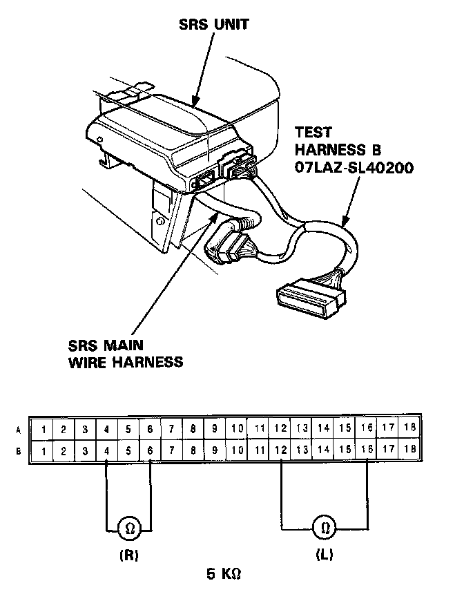

Failure Mode C and D
Mode C: Short in cowl sensor, or open in dash sensor.
Mode D: Open in one dash sensor.
CAUTION: Disconnect the battery negative cable and then disconnect the positive cable. Install the short connectors on both airbags.
1. Connect the Test Harness B between the SRS unit and SRS main harness 18-P connector. Check the resistance between the left dash sensor terminals B12 and B16, and between the right dash sensor terminals B4 and B6.

- If resistance is more than 5K ohms, go to step 2.
- If resistance is less than 5K ohms, the SRS unit is faulty. Substitute a known good SRS unit and recheck the voltages according to the chart in the "Indicator Stays On Continuously" procedure.